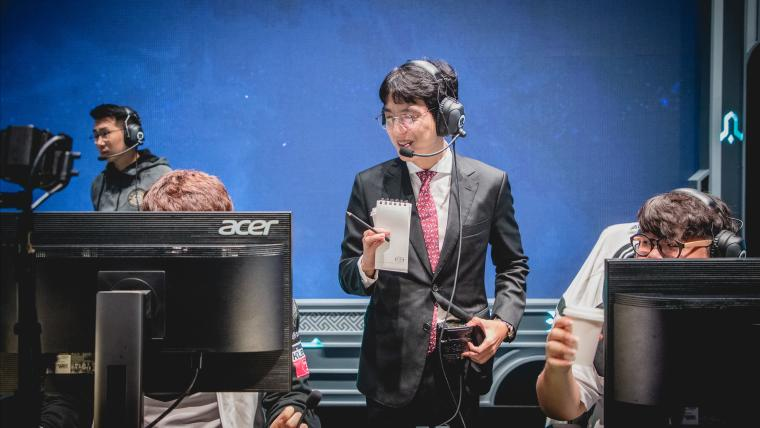
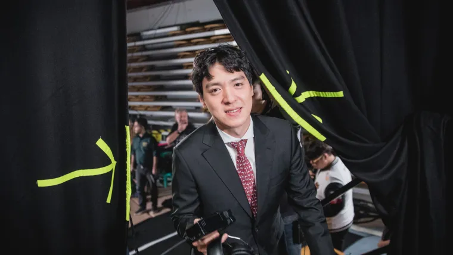

KkOma LoL là ai? Tiểu sử, thành tích huấn luyện viên mới mà cũ của T1

Hãy cùng AK News 247 tìm hiểu về KkOma, huấn luyện viên mới mà cũ của T1.
KkOma là ai?
KkOma tên thật là Kim Jeong-gyun, sinh ngày 23/12/1985. Anh được nhớ đến là vị thuyền trưởng mẫu mực trong triều
đại hoàng kim của SKT vĩ đại. Trước khi làm huấn luyện viên, KkOma cũng thử sức trong vai trò tuyển thủ chuyên
nghiệp nhưng không mấy thành công.
Năm 2013, KkOma được SKT liên hệ trong vai trò huấn luyện viên trưởng, thời điểm đó anh là một streamer có tiếng
trong làng LMHT. Sau thời gian đắn đo, KkOma đã nhận lời. Anh trở thành huấn luyện viên đội 2 của SKT với tên
SKT T1 K cùng những tuyển thủ trẻ như Impact, Bengi, Faker, Piglet và PoohManDu. Ngay lập tức, KkOma cùng những
tuyển thủ lần đầu xuất hiện đã tạo nên cơn chấn động khi vô địch CKTG 2013.
Mùa giải 2014 là một thất bại với SKT khi họ không giành được danh hiệu nào và không thể dự CKTG. Tuy nhiên,
KkOma và những học trò đã gắn bó với ông từ đầu như Faker hay Bengi đã trở lại mạnh mẽ ở những năm tiếp theo, mở
ra chu kỳ thành công rực rỡ. Đáng kể nhất là 2 chức vô địch CKTG vào các năm 2015 và 2016.
Tuy nhiên sau thất bại trước Samsung Galaxy ở CKTG 2017, SKT bắt đầu suy yếu và KkOma không thể giúp một lần nữa
vực dậy đội như năm 2014. Anh rời đội năm 2019 và chuyển đến dẫn dắt Vici Gaming ở Trung Quốc nhưng cũng không
thành công. Sau khi trở lại Hàn, KkOma một lần nữa chứng minh tài năng của mình khi giúp Damwon KIA (tiền thân
của Dplus KIA) vô địch LCK năm 2021.

KkOma cũng có vinh dự trở thành huấn luyện viên trưởng của đội tuyển Hàn Quốc giành Huy chương Vàng ở ASIAD 2023
vừa qua tại Trung Quốc.
KkOma và mối quan hệ với Faker
KkOma được nhớ đến như huyền thoại trong lịch sử T1 (trước đây là SKT). Do đó, ở lần trở lại này, anh sẽ không
mất nhiều thời gian để làm quen với đội.
Anh chính là người đã đưa Faker lên đội chuyên nghiệp và thi đấu từ năm 2013. Cả hai đã cùng nhau tạo nên giai
đoạn hoàng kim của SKT và luôn giữ được mối quan hệ rất tốt.
Do đó tin tức KkOma chính thức trở lại và tiếp quản chiếc ghế huấn luyện viên bỏ trống của T1 được sự hưởng ứng
từ đông đảo người hâm mộ. Hiện clip chào mừng KkOma trở lại đã thu hút được hơn 1 triệu lượt xem trên youtube
chỉ sau 1 ngày đăng tải.